他研究了一輩子大腦
卻讀不懂自己的孩子
甄瑞興醫師是國內知名的失智症專家。然而當他面對自己有些「特別」的兒子時，醫學知識似乎也遇到了邊界。這讓他重新思考：大腦的不同，是否一定要被視為「障礙」？「不同的大腦」不一定容易被理解，但理解卻是唯一的橋樑。
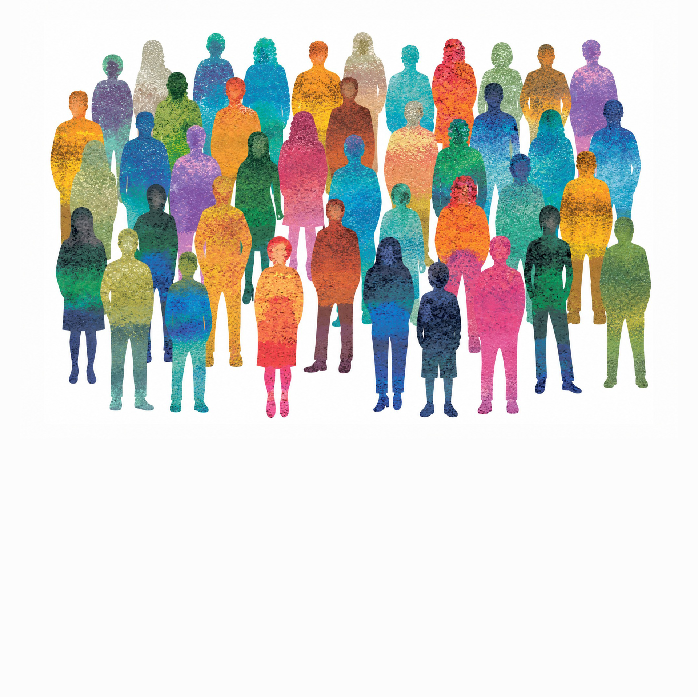
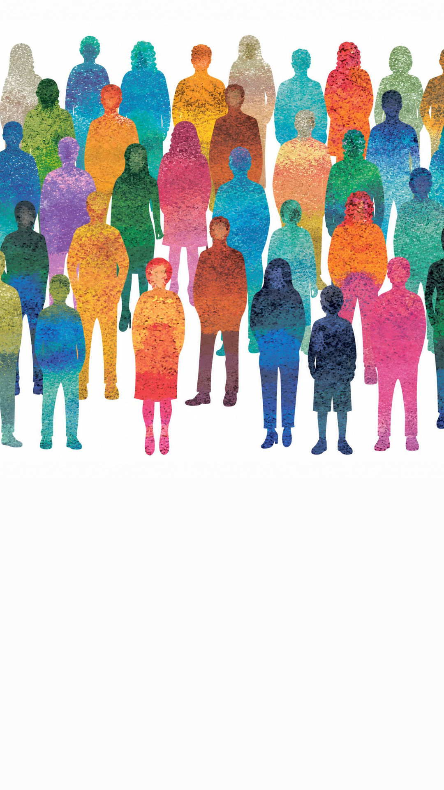
揭開神經多樣性真相
你是否曾被說過老是坐不住、容易分心？不愛說話而被認為孤僻？
有時別人很輕鬆的事卻做起來很吃力，但另一方面，又能看見別人忽略的細節。也許不是你有「問題」。
只是你的大腦，和大多數人「不太一樣」。
近年國際間開始用「神經多樣性（Neurodiversity）」重新理解這些差異。
這不是一種疾病，而是人類大腦多元發展的自然展現。當愈來愈多人被診斷為自閉症、ADHD與學習障礙，
可能不是變多了，而是過去這些沒有被看見、曾被誤解、被貼上標籤的孩子，正在被重新理解。
Part 1｜現象
當愈來愈多人被診斷為自閉症、ADHD或學習障礙，不少人開始疑惑：這些孩子真的變多了嗎？
事實上，神經多樣性並非少數人的議題。國際研究推估，約15%至20%的人口具有神經多樣性特質。
那些曾被認為與眾不同的人，或許從來沒有消失，只是直到今天，才開始被看見。
甄瑞興醫師是國內知名的失智症專家。然而當他面對自己有些「特別」的兒子時，醫學知識似乎也遇到了邊界。這讓他重新思考：大腦的不同，是否一定要被視為「障礙」？「不同的大腦」不一定容易被理解，但理解卻是唯一的橋樑。
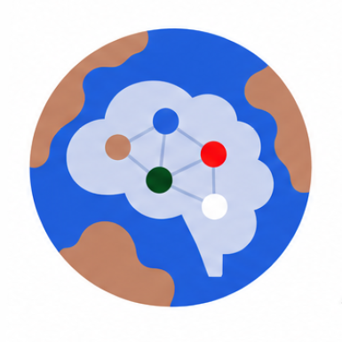
全世界83億人口
約 15%
具某種神經多樣性
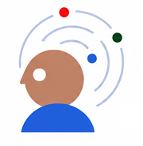
自閉症
1/36
8歲兒童患病率
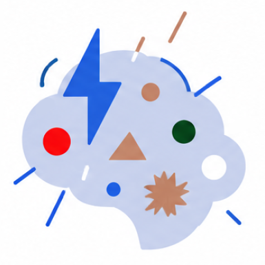
ADHD盛行率
5~7%
學齡兒童常見統計
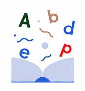
讀寫障礙
1/10
影響學習最廣泛的特質
註：自閉症數據為美國疾病管制與預防中心（CDC）2023年報告
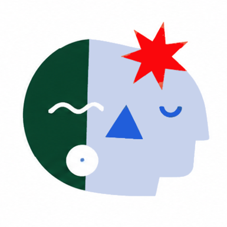
身心障礙學生
+25%
10年來快速成長
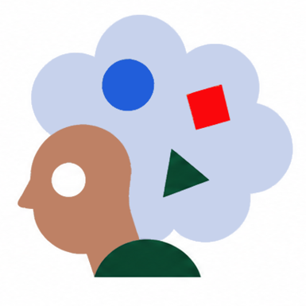
自閉症學生
+82%
增幅最為顯著的類別
學習障礙學生
>30k
確診人數持續攀升
註：身心障礙學生、自閉症學生增幅為10年間變化，期間為2013～2023年（102～112學年度）。
資料來源：教育部《112學年度特殊教育統計年報》、美國疾病管制與預防中心（CDC）、國際神經多樣性研究與流行病學統計。
閱讀完整文章Part 2｜認識
我們每個人體驗世界的方式都不盡相同，但對於大腦神經發展與主流不同的族群來說，這個差異可能大到足以影響學習、工作甚至人際關係。以下我們將走進他們的世界。
自閉症光譜者可能在社交線索、感官刺激與語言暗示上需要不同的理解方式。
常見困難理解隱喻、社交互動、感官過載。
可能優勢專注細節、邏輯分析、誠實直接。
「我不是不看你，而是如果看著你，我就無法專心聽你說話。」
ADHD 不是單純不專心，而是注意力調節、衝動控制與執行功能的挑戰。
常見困難組織計畫、持續專注、衝動控制。
可能優勢創意發散、高度好奇、快速反應、對興趣極度專注。
「我的大腦像有 100 個頻道同時播放，很難只留在一台。」
讀寫障礙者可能在音韻辨識、拼寫與流暢閱讀上遇到困難，但也常具備圖像化與整體思考能力。
常見困難文字拼寫、流暢閱讀、左右分辨、短期記憶。
可能優勢空間思考、3D 視覺化、敘事思維、跨領域連結。
「雖然我讀得慢，但我能看到故事背後的圖像。」
許多神經多樣性者直到成年後，才逐漸理解自己為什麼總覺得和別人不太一樣。元萃診所院長張家銘就是其中之一。從小不愛社交、喜歡獨處，對有興趣的事物可以投入極深，卻常覺得自己和周遭人格格不入。長大後成為基因醫師，他開始接觸神經科學與神經多樣性概念，才慢慢明白，那些曾讓自己困惑的特質，或許不是缺陷，而是大腦運作方式的不同。
Part 3｜支持
點擊下列標籤，看看他們行為背後真實的呼救與掙扎。
你看到的行為
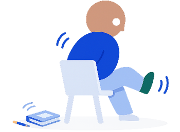
上課坐不住、扭來扭去
點擊翻面了解原因
他們經歷的困難
感官尋求或
注意力極難維持
孩子的大腦需要額外的動作刺激來保持清醒，或者他正在努力對抗過量的環境雜訊。
你看到的行為
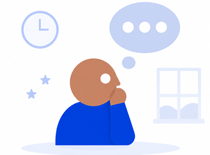
叫他沒反應、常發呆
點擊翻面了解原因
他們經歷的困難
訊息處理速度較慢
並非故意不理人，而是大腦在解碼語言指令時需要比別人多5～10秒的處理時間。
你看到的行為
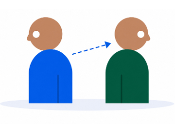
不看人眼睛、沒禮貌
點擊翻面了解原因
他們經歷的困難
社交線索解讀困難
對他而言，注視眼睛可能產生極大的社交焦慮與不適，而非故意缺乏禮貌。
你看到的行為
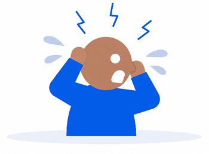
突然情緒爆發、大哭
點擊翻面了解原因
他們經歷的困難
感官超載或
無法表達需求
當環境的光線、聲音或需求受挫達到臨界值，大腦會進入當機狀態，導致情緒失控。
阿國曾被標籤為「不用功」、「故意不讀書」，直到特教老師發現他是嚴重的閱讀障礙。當支持介入，他才不再是被困在文字迷宮裡的孩子，而是能透過語音工具與適合自己的方式展現智慧的學生。
閱讀完整文章Part 4｜出路
神經多樣性伴隨終身。離開校園後，升學、就業、獨立生活與人際互動都可能成為新的挑戰。我們需要的不是治癒，而是環境的調整。
許多國際大型企業（如微軟、SAP）已開始調整面試流程，取消高度依賴社交技巧的對談，改以任務實測發掘人才。
建立一個支持性的制度、調整面試方法與工作環境，讓不同的大腦在職場中不再需要「假裝成一般人」。